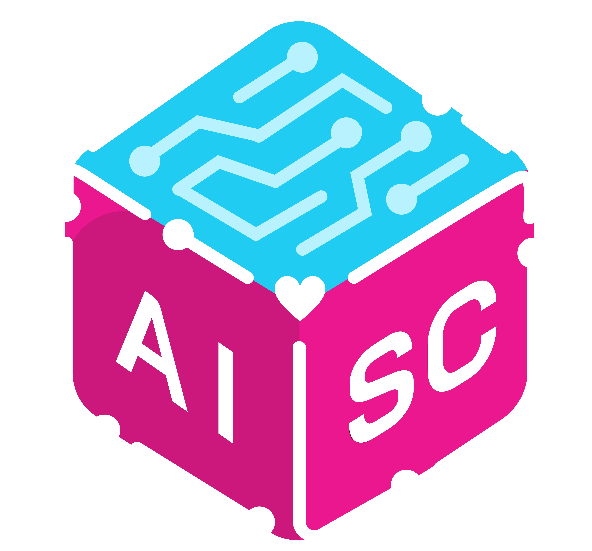
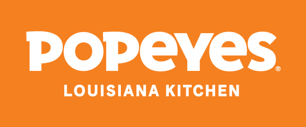
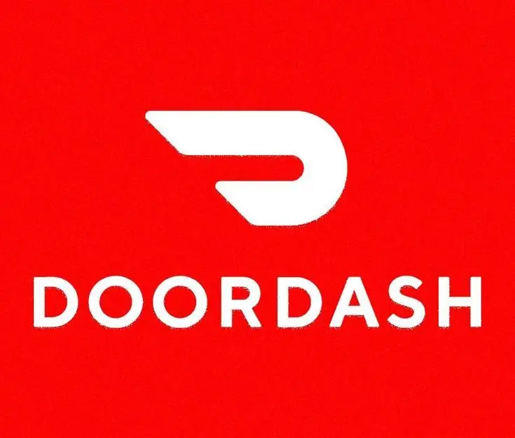

UC San Diego | Mar. 2026 – Jun. 2026 | Hybrid: La Jolla, California
As an Undergraduate Cognitive Science Researcher at UC San Diego, I conduct independent research under Professor Steven Barrera, applying machine learning and cognitive science principles to analyze baseball player evaluation and performance. My work integrates vision, neuroscience, and distributed cognition to better understand how athletes process pitch-level information and make real-time decisions. Having this research opportunity allows me to exercise my freedom as a Cogntive Science student. I told myself as a kid, whatever I study in college, I better be able to use these skills even after I am done with school. I was a baseball player my whole childhood, so the four words: Cogntive Science Machine Learning, had no type of meaning in my life. But as I continued to pursue my dreams, I understood that switching to COGS from Math-Computer Science was the right choice for me. Simply becuase I've always wanted to learn about artificial intelligence, as well as how my mind and brain works. So this specialization was very specific to my personal path in life. I get to incorporate almost everything I learned as an Undergradute student in UC San Diego, which is always what I've wanted to do. And as a former baseball player, through this position, I am able to combine my passions into actionable research that helps my team win. I mainly incorporate my TriKirby Index Statistic (More information about the TriKirby Index in the Projects page) into metacognition and self-regulated learning. I ask UCSD Pitchers this basic research question: Based on what your TriKirby Score indicates, how will you use this information to learn how to control your pitch command and become a better student athlete? This gives our pitcher a self reflection and a quantifiative numerical statistic that measures their consistency and work-ethic for the purpose of optimizing their body and learning tendencies towards commanding that baseball to land wherever they want it to be, for every single pitch type in their arsenal. As the sole Cognitive Science major in the UCSD Baseball analytics team, I was selected for this position by the UCSD COGS Department Director Mr. Andrew Cronan in efforts to help the Head Chair of Cognitive Science Dr. Bradley Voytek establish UC San Diego's Future Sports Management Masters Program. I communicate my independent data reports to him while also sharing my experience as a college-student working in a sports organization.

UC San Diego Baseball | Jan. 2026 – Jun. 2026 | Hybrid: La Jolla, California
Being a Data Scientist for UC San Diego’s NCAA Division I Baseball program, I build end-to-end machine learning pipelines in Python to process and analyze TrackMan pitch-level data from live games and practices. I work closely with the UCSD Baseball coaching staff including Head Coach Eric Newman, Pitching Coach Matt Harvey and Head of UCSD Baseball analytics Ryan Bobb. I was already an analyst for our team, however due to my experience in data science as a machine learning research analyst for TritonBall Sports Analytics, I was able to get onboarded into project teams that use technical skills to help our coaching staff better understand our players and how they perform in-game. We gather our pitch-by-pitch data from our Triton Baseball Google Cloud data storage and apply python libraries such as PANDAS, matplotlib, numpy, and seaborn to generate data visualizations of our player's performance. Then I perform Exploratory Data Analysis and explain these technical, github/python based workflows so that our players and coaches have a quantifiable interpretation on how they can improve their play towards achieving our goals of winning the NCAA D1 Big West Conference. Sports is traditionally a non-technical working environment. Growing up playing baseball, we did not have access to this level of data analysis. So my experience as a data scientist for baseball gave me a whole new perspective on how my favorite sport is played. You really do learn something new every single day. Luckily, baseball is one of the heaviest analytically quantifiable sport in the world. This work improved interpretability in pitching analytics and provided coaches with data-driven insights for player development, pitch design, and game strategy. Being able to expand my skillset in data and tech, while also having to communicate these insights for a baseball coaching staff that do not specialize in coding or data analytics allows me to still contribute as a baseball player while not being on the field.
UC San Diego Baseball | Oct. 2025 – Jun. 2026 | On-Site: La Jolla, California
After I was done playing baseball during my senior year of high school, I essentially wanted absolutely nothing to do with the sport. After 12 years and dedicating most of my life to baseball, when it was done I didn't swing a bat, touch a ball, put a glove on, or watch any type of baseball games for a couple of years. I used to look back at my career in deep sadness due to how it ended and how it stopped so suddenly. Most of my lifelong friends ended up playing college ball so it was an experience I felt like I was missing out on. But for a few years sicne there was no practice or games to look forward to I basically felt like I did not know what to do with my life anymore. Baseball was a big part of my identity, I felt like a part of me died not being able to do something I've done my whole life. As I had to start a whole new career path, I looked to myself and understood that I knew too much about my favorite sport to not put it to waste. I felt like I didn't know anything else. So then the opportunity of being a data analyst for Tritons Baseball arose. Even though I was away from the sport for so long, this decision to pursue this role came naturally. As a Data Analyst for UC San Diego Baseball, I collect, process, and analyze pitch-level data using TrackMan OS on-site during practices, scrimmages, and official NCAA games. I help ensure data integrity across release, location, and pitch-tracking metrics that support downstream analytics workflows. I collaborate with coaches and analysts to translate data into scouting reports, player development insights, and performance visualizations. I collect trumedia data and opposing team roster reports which is utilized by our coaching staff during games. It also gave me a taste of what Division I baseball looks like. I love this job, I get to sit down and watch baseball the whole night, helping my team win without the stress involved in being a player. Through this role, I finally remembered what it felt like to be part of a team, contributing and communicating in ways to help win and succeed without being in between those white lines.

Artificial Intelligence Student Collective (AISC) | Dec. 2025 – Jun. 2026 | On-Site: La Jolla, California
My time as an Applied Artifical Intelligence Project Lead for Artifical Intelligence Student Collective (AISC) of UC San Diego includes leading end-to-end machine learning projects from problem formulation to prototype development. I personally interview and select UC San Diego students who are interested in joining the long-term projects design, collaborating in multiple divisions of the pipeline process. I then manage a team of ML engineers and UI/UX designers while guiding the full pipeline process, including data collection, preprocessing, feature engineering, model training, evaluation, and presentation. This role has strengthened my skills in Python, PyTorch, scikit-learn, project management, and technical communication. It also gave me a fundemental introductory understanding on how to effectively train deep learning models. Outside of class, I am learning how to perform backpropagation, handle an overhitting model, and minimize loss from assigned weights and gradient decent. Still not where I want to be, but once I master these technical skills, my career as an engineer will allow me to create efficient models to answer questions humanity didn't have prior to handing this amazing technology. We then present our projects to industry professionals, UCSD students, Professors, and grade-schoolers of San Diego to showcase our impactful projects for a public audience. With the user-centered AI solutions our teams aim to build through our projects, it gives me an opportunity to help. I want to feel useful and contribute to making technology for the benefit to making life more livable. Being able to use such a high-level advanced technology allows me to become a valuable piece in a team who wants to create meaningful work. As a team leader we aim towards building AI solutions that make artificial intelligence more practical and accessible for real-world impact. Being the leader holds a responsibility that I don't shy away from. I understand the people I chose in my team count on me to help them build their skills in machine learing and artificial intelligence but more importantly, puts me the position to inspire my teammates to create impactful work, work they are proud to produce.

TritonBall Sports Analytics | May 2025 – Jun. 2026 | Remote
When I was a Machine Learning Research Analyst for TritonBall Sports Analytics, I developed data-driven baseball research articles that combine machine learning, statistical modeling, and sports analytics. This was the first technical position I've ever gotten, which jump started my career in tech. I was pretty lost during this time of my life because I knew I wanted to be some type of AI Engineer, but my path in getting there was not clear. So I couldn't see the route to my dream career path or if I was even cut out for this by any means. But as I was walking down library walk one day, I saw TritonBall tabling which was a newly established sports analytics club on campus. I knew sports data analytics was a possible career path for me, only because I came from a baseball background. I thought to myself, "Okay, I don't know too much about tech or data analytics but I know so much about baseball." Data analytics and artifical intelligence is applicable in any industry and career so I was able to apply my knowledge in baseball. This was my way of teaching myself how to handle data and machine learning, simply putting it "Explain this in baseball terms." The board was really cool and we instantly bonded more towards our love for baseball. Luckily for me, after attending a guest speaker event from the President of Research and Development for the San Diego Padres Adam Esquer for TritonBall, I believe I expressed my passion and interest in baseball extensively asking various questions on how baseball analytics works. Enough so to secure a spot as a data researcher for TritonBall despite the resume I submitted to them being so bad (in terms of lack of data experience). So over the whole summer, while studying abroad in Berlin, I would spend my time building this MLB research article during our lectures and late nights instead of paying attention in class. I taught myself how PCA and K-Means clustering works long before I even took a machine learning class. I've also always hated writing throughout my life, but the essays I wrote for the humanities courses I took and COGS 13 - Research Methods taught me how to be a comprehensive and cohesive writer. Being able to convey my thoughts and express my arguments clearly through writing allowed me to communicate complex machine learning theory not only to myself but also to a public audience. So the Five Archetypes Project (more information on it in my projects page) helped me come back to the sport I love, self-teach myself machine learning, become a published author, and jumpstart a new career path in tech. All in which were experiences I never thought I would ever have during my first few years in college. My work includes building end-to-end Python pipelines, engineering features from player and pitch-level data, applying machine learning models, and creating visualizations with Pandas, Matplotlib, and Seaborn. Through published research articles, I translate technical machine learning findings into accessible baseball analytics insights for the broader sports community on Medium.com. I am forever grateful for the people of TritonBall Sports Analytics, as this gave me a public platform to showcase my machine learning skillset and extensive knowledge of baseball helping me communicaate complex data science in a digestable sports environment.
TriCore Medical Supply | May 2025 – Jun. 2026| On-Site: Pittsburg, California
I was a Warehouse Team Member and Delivery Driver for TriCore Medical Supply based in Pittsburg, CA. I worked in the warehouse loading vans filled with various hospice care materials. These supplies include adult diapers, chux, wipes, latex gloves, etc. I then drove these vans to various houses, pharmacies, hospice facilites, memory care, and nursing homes, and hospitals. Our network spanned all across NorCal, reaching locations in the Bay Area, Central Valley, and Santa Cruz. This was one of the nicest jobs I've worked so far. I don't really hit the gym anymore so loading over a hundred heavy boxes every morning felt like a workout I very much needed. It was a small team of people I've known since my childhood working for my father's close friend. So working with the TriCore team was always a pleasure. I enjoy driving a lot because I just get to sit and listen to music for hours as I cruise around parts of NorCal I would have never discovered. I worked with my friend Cyrus who is a music producer so if we had routes together we would sit and bond to music, listening to new genres, discovering artists, talking about song lyrics, and the different instruments used in each song. It was nice to share my love for music with someone while at work. if I wasn't working here. Although it was not a technical job, it gave me a sense of humility as I was responsible for bringing people their much needed medical supplies to live comfortably during the final stages of their time on Earth. Some days I would load the vans and deliver for only 3 hours, and some days I would be on the road for 13 hours, coming home at 10pm. So I would expect something new everyday coming to work. I also crashed the van a multiple times and I felt really bad because the damages were very noticable

UC San Diego Housing, Dining, and Hospitality | Sept. 2022 – Feb. 2025 | On-Site: La Jolla, California
I contributed to daily operations within a high-volume service environment, supporting food preparation, customer service, and team coordination as a Dining Hall Student Worker at UC San Diego. I worked in the Sixth Resturant Dining Hall. We had different stations such as Wolftown, which was a Mexican spot, Makai was poke, Noodles had ramand and pho Crave sold sandwich wraps and salads, and Rooftop sold American BBQ. So everyday at work was a different day depending on where I was stationed. I knew it was important for the UCSD students to eat warm and nutritious meals, being a student myself. So sometimes I would give a larger portion size than what was recommended. I really stressed out over the whole college experience, having moved far away from home and taking classes that pushed my mental limit. So luckily this job did not contribute to this stress because I was working with my friends and it was just time away from having to focus on school while also being paid to work. Contrary to popular opinion, I really liked dish room. I would stay in the back and listen to music. But my favorite part of the job was the free lunch we had during our shifts. I was really, really broke and I would only spend my money on food or school stuff so everytime I got free food I was so grateful. I developed strong communication and teamwork skills by working in food service, bussing, and dish washing. This experience reinforced my ability to collaborate effectively, adapt quickly, and deliver consistent service under pressure. Being able to serve hot meals for my UCSD community gave me a humbling outlook in the importance safety, food preperation, and service.

Popeyes Louisiana Kitchen | Jun. 2023 – Jul. 2023 | On-Site: Antioch, California
As a Restaurant Crew Member, I worked in a fast-paced team environment handling food preparation, order fulfillment, and customer interactions. This was my least favorite job for sure. It gave me a whole new level of respect for those who work in food service becuase its such a thankless job. Without getting into the specifics I was only there for less than a month, and I earned a decent amount of money to last me the summer until I came back to San Diego. I just knew this lifestyle was not for me and it pushed me to pursue a career that encouraged me to do more personally fullfilling work. I strengthened my ability to communicate clearly, multitask efficiently, and maintain high performance under time constraints. This role developed my adaptability and work ethic in high-pressure operational settings.

DoorDash | Oct. 2022 – Jan. 2023 | On-Site: Bay Area, California
As a Food Delivery Driver, it was kind of like my job as a Driver for TriCore, but I worked on my own time. Nothing much to say abou this job, I only did it for a small period of time to make a little money so that I can survive down in San Diego. When I was a Dasher, I justed moved into the Brentwood/Antioch/Oakley area. So this allowed me to explore my new home and tour around places and restaurants that I would not have previously been to if I was not working for DoorDash.